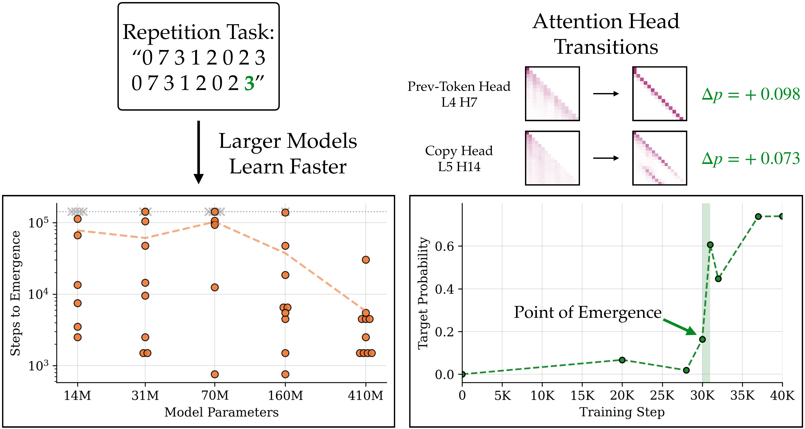
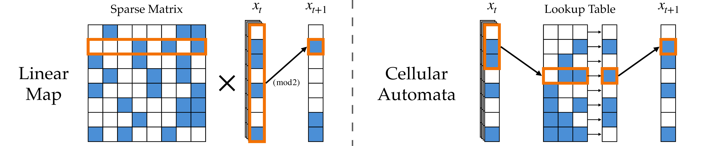
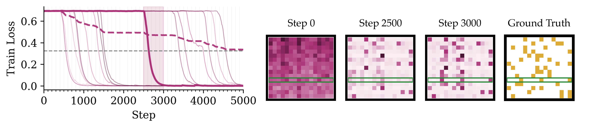
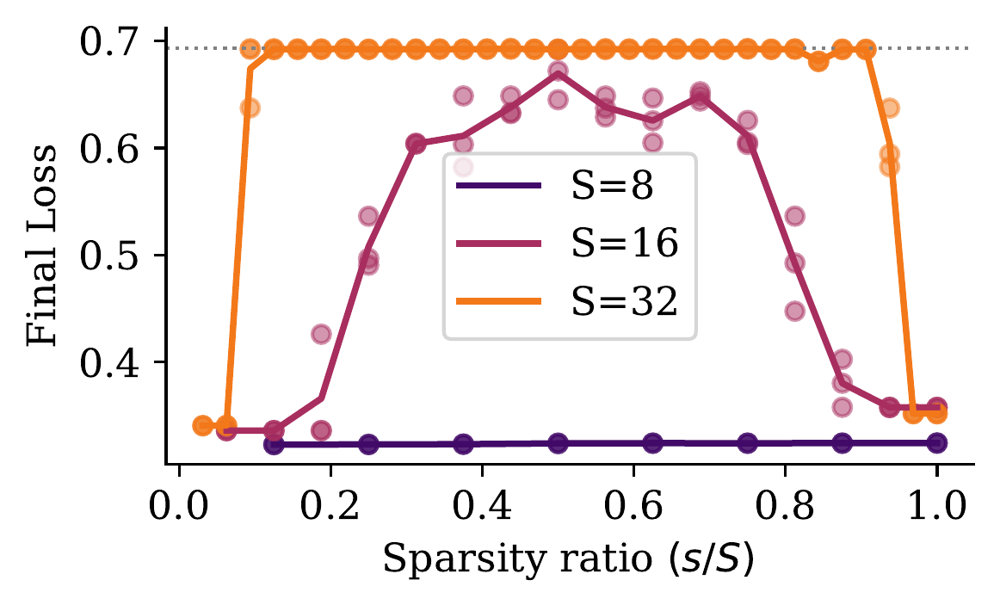
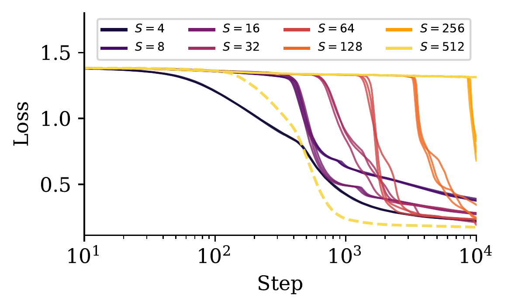
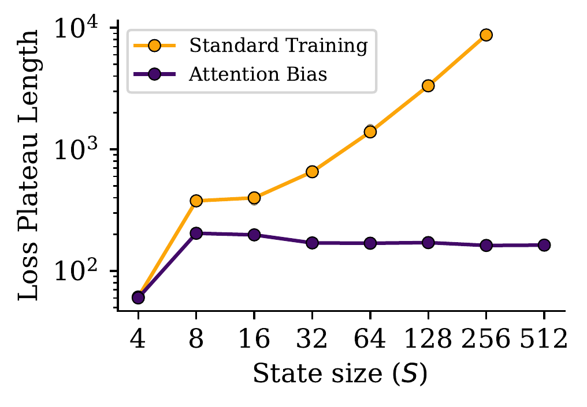
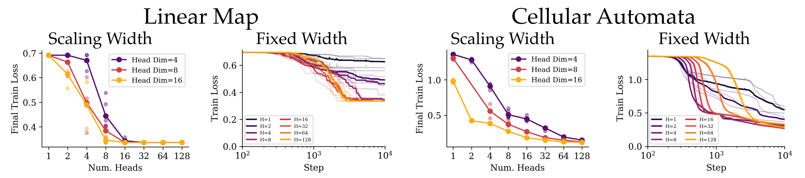
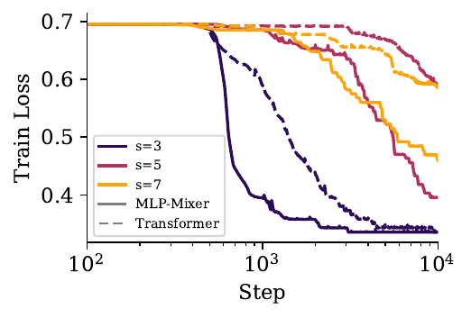

Paper · Code
The Curious Case of Emergent Capabilities
Although we have a very limited understanding of the inner workings of deep neural networks, at a macroscopic level neural scaling trends for pretraining performance are surprisingly very predictable. But in reality we don't judge LLMs by their pretraining loss; rather, we care about whether they can solve practical downstream tasks. And these practical capabilities, historically, have not been so predictable. For example, GPT-3 resembled a step-function-like jump in in-context learning capability that no one saw coming. Many such emergent abilities have been widely documented in the past few years: as we continue to scale LLMs, new capabilities emerge that were barely (or not at all) present in smaller models. Why are larger models' capabilities so qualitatively different? And is this emergence truly random, or can we interpret what factors drive the acquisition of these capabilities?
One major confounding factor in studying emergent capabilities is the effect of randomness. It is not quite the case that a smaller model "never" acquires a capability and a larger model "always" does; whether a capability is realized depends heavily on the random initialization of the model. We can interpret the effect of model scale as increasing the probability with which a model acquires a capability. But this raises another question: why is emergence so seed-dependent in the first place?
Even if we ignore the parameter scaling axis and focus on a single training run, we cannot predict when exactly a capability will show up in a model. Capabilities tend to emerge abruptly: see induction heads for example, where a model learns a core attention primitive that enables massive improvement for in-context learning. Specifically, this primitive is quickly learned in a short span of training, with minimal improvement before or after this span. In this way, acquiring a capability feels like a phase change, where "you know it or you don't" and the transition between "not knowing" and "knowing" is almost instant. Note the relevance of a key attention pattern — this will be a central component of our analysis.
So we know that emergent capabilities arise quite abruptly, and whether or not they emerge at a given model scale is heavily influenced by randomness. But in both cases, we don't know why models behave this way. We begin by investigating the following question: what actually changes in a model during this sudden, seemingly random period of emergence?
What Happens When a Capability Emerges?
We begin by reproducing the random scaling of emergent capabilities demonstrated by Zhao et al. We evaluate training checkpoints from the Pythia suite, which includes models trained with 10 random initializations across multiple parameter scales. Although we look at a smaller number of random seeds than Zhao et al., using Pythia models enables us to study performance on realistic natural language tasks. In Figure 1 we illustrate a simple copying task: the model is given a string of numbers, along with the same partially repeated string, and it must predict the final token to complete the repetition. We say a model has "solved" this task if its greedy output matches the correct next token. In the left plot we confirm that whether or not a model solves this task depends heavily on the random seed, and the probability of solving the task increases with model scale. Because Pythia models include checkpoints at every 1000-step interval, we can also track down when each model learns to solve the task. Interestingly, larger models are not only more likely to acquire this copying capability, but they also learn it much earlier on average.
In Figure 1 (right) we track task performance — the model's probability of predicting the correct next token — across training steps for a single 410M Pythia model. It turns out that this probability stays near zero for most of training. But in a very short interval, the probability shoots up to ~0.6, enabling the model to suddenly solve the task! Note this is a sharp jump in a smooth, continuous metric, so it isn't an artifact of a thresholded accuracy score. We call this abrupt transition the point of emergence. What changed during model training that led to this sudden spike in task performance? This "abrupt learning" phenomenon has been documented in prior works specifically focusing on pretraining with algorithmic tasks, and their results show that abruptness corresponds to the model discovering a key task-relevant attention pattern. Let's see if our model also discovered any relevant attention patterns in this short interval of training.

Figure 1: Language model capabilities emerge randomly and abruptly due to learning core attention patterns. Left: models with different initialization seeds learn a repetition task at random points throughout training; larger models consistently learn faster on average (dashed line). Models marked with a grey X did not solve the task by the end of training. Right: the model's correct token probability abruptly spikes during training, which coincides with learning relevant attention patterns.
We apply a causal head ablation, where we take the attention scores of a single attention head in the "new" model (after the point of emergence) and patch them into the "old" model. The old model effectively gets to peek at the attention pattern the new model learned; the exact implementation details are provided in our paper. For each individual attention head we measure how the old model's correctness probability increases when we patch in the pattern from the new model. In the top right of Figure 1, we show two attention heads with the largest probability delta around the point of emergence. These actually correspond to the model learning very interpretable patterns relevant to the copying task! Note that simply patching these two attention heads into the old model is enough to recover most of the performance increase, confirming that learning these patterns causes the capability to emerge. The abrupt emergence of the copying capability is a lot less mysterious now: we can trace it down to the model learning attention patterns that are directly relevant to the task.
These results offer an explanation as to why language model capabilities are so seed-dependent in the first place. If a capability depends so heavily on learning specific attention patterns, and these patterns emerge abruptly, then model initialization should play a massive role in whether a model can "discover" such patterns. But we still want to figure out another detail: why are larger models more efficient in this pattern discovery?
Controlling Attention Pattern Learning With Synthetic Tasks
With Pythia models we demonstrate variable and sharp emergence on real natural language tasks (see Figure 2 of our paper for more examples), but our findings are purely observational. There is no single "ground-truth" attention pattern for modeling an entire pretraining dataset, so we cannot systematically control knobs like the difficulty of the task. We see that learning attention patterns is a key driver behind emergent capabilities, so to study the role of attention in isolation we introduce two synthetic tasks: linear maps and cellular automata.

Figure 2: Two synthetic tasks where we can exactly define the token dependencies between consecutive states. Cells highlighted in orange indicate the relevant token positions for computing a single cell of the next state. Linear map state transitions compute the parity of a sparse subset of the previous state for each cell. Cellular automata state transitions depend on a deterministic lookup table indexed by a local window of cells. Learning both tasks involves attending to a specific set of cells in the previous state.
In both tasks, we train the model on a dataset containg trajectories of discrete-valued state vectors (flattened into a contiguous sequence). We generate a sequence by sampling a random S-dimensional initial state and iteratively applying a transition function. Figure 2 illustrates examples of transition dynamics for each task. Solving the linear map task essentially comes down to computing the bitwise parity on a sparse subset of the input state, but this subset varies for each output position. Note that the matrix by which we define this task also corresponds to the optimal attention map: each output position should only query the input positions corresponding to nonzero entries of the corresponding matrix row. We set a sparsity parameter s that controls how many entries in each row are nonzero. In contrast, the cellular automata task consists of applying a lookup table on a fixed local window of the previous state. Note that we sample from many lookup tables when generating cellular automata data, so the model must first infer the lookup table rules from previous context before making a prediction.

Figure 3: Abrupt learning on the linear map task corresponds to learning rows of the ground-truth matrix. We plot the aggregate loss curve (dashed) decomposed into loss on individual output tokens (light blue) for a 1-layer transformer. We highlight one loss jump in bold and find that it corresponds to a drop in entropy for two attention heads. We plot the averaged attention maps for these two heads at initialization, along with before and after the loss jump (steps 2500 and 3000 respectively). We see that the loss jump corresponds to two attention heads jointly learning a single row of the ground truth linear map.
Figure 3 illustrates the learning dynamics for a single-layer transformer on an s=3 linear map. The loss curve when training on the linear map is very jagged; in fact, if we track the loss on individual output token positions (the faint purple lines) we see that the model is learning a single output token at a time. Additionally, the loss on individual output tokens follows an abrupt phase change following a long plateau, which is the same "all-or-nothing" behavior we saw for the copying capability in Pythia models. As we describe in our paper, we again pick out relevant attention heads by tracking which heads experience a drop in attention pattern entropy. For example, the one loss jump we highlight in Figure 3 corresponds to two attention heads dropping in entropy — their attention patterns quickly jump from diffuse to sparse. The right side of Figure 3 illustrates this attention pattern shift, and we can see that the model indeed learns the ground-truth pattern for one row of the sparse linear map.
We can also test the synthetic analog of our attention patching experiment. With Pythia models we had no ground truth attention pattern, so we just used whatever pattern the model learned after the point of emergence. Here we do have a ground-truth map, and in our paper we describe how we use this map to "bias" the model's attention scores towards this solution. When we apply this intervention, the loss plateaus vanish and the model solves the task almost immediately. This confirms that the plateaus correspond to a learning bottleneck stemming from the model not knowing the correct attention pattern.
We can vary how difficult it is to learn the ground-truth attention pattern by adjusting the sparsity s. Low s means the model only has to attend to a few tokens in the previous state, while high s indicates the model should attend to most of the sequence. In Figure 4 (left) we show the final loss of a model trained on linear map tasks with varying density ratio s/S, where S is the state size. Very sparse patterns and very dense patterns are both easy for the model to learn; the most difficult setting is with intermediate sparsity. Note that when we sample the sparse matrix defining our linear map, each row has {s \choose S} possibilities — maximized at s = S/2, which is exactly where learning the map is hardest. This suggests that the model employs a search-like approach over all possible attention patterns, and the larger the search space, the more difficult the task.



Figure 4: Training dynamics become abrupt with longer context and medium sparsity. We average training loss over three models trained with different seeds. Left: models can always learn very sparse or very dense attention patterns in the linear map task, but as we increase the state size medium-sparsity patterns become harder, and are unlearnable by S=32. Middle: given a fixed token batch size, increasing the state size S shifts the cellular automata loss dynamics from smooth to abrupt; biasing the attention scores toward the ground-truth pattern (dashed) recovers immediate learning even at S=512, where the model otherwise makes no progress. Right: the loss plateau lengthens multiplicatively with state size, but the attention intervention neutralizes the effect.
Figure 4 (center) shows the loss curves when training transformers on the cellular automata task. We always use a fixed local window attention pattern where each state transition depends on the three neighboring cells in the previous state as in Figure 3. However, we can still vary the state size S, and we see that this has a dramatic effect on learning dynamics. In fact, past a certain point increasing S makes the task unlearnable within 10,000 steps! Note we keep the token batch size fixed, so when we increase S we also reduce the sample batch size by the same factor. Without changing the underlying nature of the task, learning cellular automata becomes arbitrarily difficult simply by scaling the size of the context. Consider how the model solves the task by attending to a local window of cells; as we scale S this becomes a needle-in-a-haystack problem with an increasingly large haystack. In Figure 4 (right) we see that increasing S indeed has a multiplicative effect on the length of the loss plateau, or how many training steps it takes for the model to make any progress at all. And as before, biasing attention toward the correct local window pattern erases the plateau entirely, so we can confirm the plateau is specifically due to attention pattern learning.
How Architectures Affect Attention Pattern Learning
We've seen that emergent capabilities depend on how well a model learns task-relevant attention patterns, and our synthetic experiments frame attention pattern learning as a search problem. How can we design architectures to better facilitate this search? We first experiment with scaling the width of a transformer model. We could either scale width by increasing the number of attention heads, or only increasing the dimension of each attention head. Figure 5 illustrates the result for both approaches on each synthetic task. Interestingly, increasing the number of heads is more beneficial than increasing head capacity. This is reminiscent of the lottery ticket hypothesis; you can think of larger models having more "lottery tickets", where a lottery ticket corresponds to a single attention head that could potentially learn the task-relevant pattern.

Figure 5: More heads help more than bigger heads. On the linear map task, adding attention heads steadily lowers the final loss. A model with many tiny heads beats a model with a few large ones, even at the same total width, which supports the idea that each head is performing a parallel search for the right pattern. On the cellular automata task, however, we cannot naively scale head count; there is still a minimum head capacity required to solve the task because the model must perform posterior rule inference.
We also experiment with different architectures that implement alternatives to the transformer's dot-product attention. In our paper, we show that for the most part, other architectures such as Mamba, Gated DeltaNet, and RWKV underperform relative to transformers. However, there is one significant outlier: MLP-Mixer outperforms transformer by almost an order of magnitude in sample efficiency on the linear map task. The MLP-Mixer architecture employs an MLP over the sequence dimension; intuitively, it seems much easier to directly express the positional attention pattern through an MLP rather than dot-product attention scores. However, the MLP-Mixer still underperforms on the cellular automata task. This is likely due to the context-dependent nature of cellular automata, whereas in the linear map the attention pattern is fixed across all samples. Still, this result suggests that there is room to design better architectures that can efficiently learn sparse attention patterns. And our results on Pythia models suggest that an improvement in attention pattern learning may also translate to stronger downstream capabilities in language models.

Figure 6: MLP-Mixer outperforms a transformer on the sparse linear map task. As we increase the sparsity for the linear map task with state size S=16, the transformer model struggles to learn the task while the MLP-Mixer achieves much lower loss. Note this uplift is specific to the linear map task and transformers still achieve the best performance across all architectures on the cellular automata task.
Future Directions
We started by asking the question: why does emergence seem so random in the first place? Now, we can say that emergence is not quite random in the sense that it comes down to a coin flip at any given training step. Rather, an emergent capability is a byproduct of the model acquiring some key attention pattern that is relevant (and necessary) for the task. When exactly a model learns such patterns is highly variable and depends on the random initialization. But, we can dampen the effect of randomness by utilizing many attention heads in parallel, which is why larger language models tend to acquire capabilities more consistently and more efficiently on average. For the tasks we study, once the model learns some ground-truth pattern, the subsequent computation to arrive at the correct answer is relatively trivial. This is why we see abrupt learning behavior where attention pattern learning is the core bottleneck. We speculate that there are a number of ways to circumvent, or at least simplify, this bottleneck through training interventions.
One immediate future direction is to design new architectures that are more efficient in learning token dependencies within sequences. Although the transformer has remained the state-of-the-art for almost a decade now, our results with MLP-Mixer show that there do exist settings where other architectures can perform significantly better. Also, it is unclear whether the bottleneck of attention pattern learning is an expressivity problem or an efficiency problem. If it is merely a matter of efficiency, then we could produce more capable small language models by first training a much larger model (with many more attention heads) and distilling the learned attention patterns into the heads of a smaller model. Additionally, direct interventions like the ones we demonstrated on our synthetic tasks may be especially helpful for training long-context language models. For example, many long-context coding tasks involve finding the relevant "needle-in-a-haystack" within a codebase; encouraging a model to attend to these directly may improve sample efficiency for training coding models.
A final note: our emergence analysis shows that a model's training loss and what it actually learns are not as related as they might seem. All of the Pythia language model checkpoints for a given model scale achieved similar train loss, but we saw that their downstream capabilities varied greatly depending on their weight initialization. This discrepancy may explain the effectiveness of ensembling: even if multiple models achieve the same loss, averaging their predictions may essentially "pool" their capabilities to yield a more general solution. As we develop machine learning systems that generalize, perhaps we should look beyond loss as the sole metric to optimize and develop a deeper understanding of how models acquire practical capabilities.